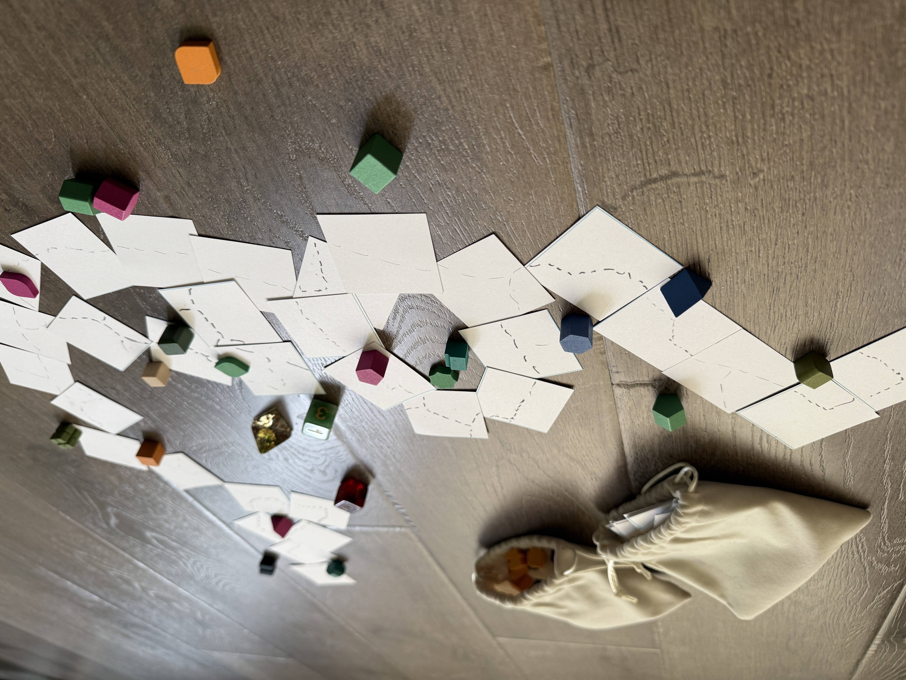

Garden Paths is a 2-4 cooperative board game where players work together over the course of ten rounds building out a garden landscape. As landscapers, players create memorable points of interest when landscaping for visitors
to look forward to when visiting the space, and lay out the paths visitors will walk through. There are no winners, the goal of Garden Paths is to enjoy building out the space with you and your friends to create the best garden out there.
This game was made as a final project alongside Path Maker as part of DePaul's Computer Gaming & Animation study abroad program to Japan in the summer of 2025.
On their turn, players will roll 2d6 and halve the results of each roll, grabbing that number of point of interest components and garden tiles with a random side face up. Point of interest
components are gently tossed in front of the player or near a garden tile not in a closed loop. Garden tiles are then placed down one at a time in whatever orientation the player sees fit. For each
blank tile that was drawn, use something to write with to draw a path and roll 1d4-1 to determine the number of branching paths that can be created off of that. A round is completed after all players take a turn.
The game ends after ten rounds. By the end of the game, players must have their paths connected to at least one other player's path. There is also optional scoring for point of interest components in closed loops
and the number of branching paths connecting adjacent tiles.